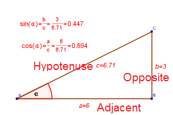

$$ \mathbb{C} = \left\{ x+iy ~|~ x \in \mathbb{R} ~~ and ~~ y \in \mathbb{R} \right\} $$
$$ \mathbb{N} \subset \mathbb{N}_0 \subset \mathbb{Z} \subset \mathbb{Q} \subset \mathbb{R} \subset \mathbb{C} $$
$$a + b\,i = c + d\,i ~~ then ~~ a = c ~~and~~ b = d$$
$$ \frac{a + b\,i}{c + d\,i} = \frac{a + b\,i}{c + d\,i}\cdot\frac{c - d\,i}{c - d\,i} = \frac{ac + bd}{c^2 + d^2} + \frac{bc - ad}{c^2 + d^2} \, i$$
$$ \left[r \left( \cos\theta + i\,\sin\theta \right) \right]^n = r^n \left( \cos ( n\theta) + i\,\sin (n\theta) \right)$$
$$ \left[r \left( \cos\theta + i\,\sin\theta \right) \right]^{1/n} = r^{1/n} \left( \cos \frac{\theta + 2k\pi}{n} + i\,\sin \frac{\theta + 2k\pi}{n} \right) ~~ k=0,1,\dots, n-1 $$
Quadric Equation: $ax^2 + bx + c = 0 $
$$ x_{1,2} = \frac{-b \pm \sqrt{b^2 - 4ac}}{2a} $$
If $ D = b^2 - 4ac $ is the discriminant , then the roots are
1. real and unique if $ D > 0 $
2. real and equal if $ D = 0 $
3. complex conjugate if $ D < 0 $
Cubic Equation: $x^3 + a_1x^2 + a_2x + a_3 = 0 $
Let
$$ \begin{aligned} Q &= \frac{3a_2 - a_1^2}{9} \\ R &= \frac{9a_1a_2 - 27a_3 - 2a_1^3}{54} \\ S &= \sqrt[\Large3]{R + \sqrt{Q^3 + R^2}} \\ T &= \sqrt[\Large3]{R - \sqrt{Q^3 + R^2}} \end{aligned} $$
Then solutions (roots) of the cubic equation are:
$$ \begin{aligned} x_1 &= S + T - \frac{1}{3}a_1 \\ x_2 &= -\frac{1}{2} (S + T) - \frac{1}{3}a_1 + \frac{1}{2}\,i\,\sqrt{3}(S-T) \\ x_3 &= -\frac{1}{2} (S + T) - \frac{1}{3}a_1 - \frac{1}{2}\,i\,\sqrt{3}(S-T) \end{aligned} $$
If $D = Q^3 + R^2 $ is the discriminant of the cubic equation, then:
1. one root is real and two complex conjugate if $D > 0$
2. all roots are real and at last two are equal if $D=0$
3. all roots are real and unequal if $D < 0$

$$ \sin \alpha = \frac{\text{Opposite}}{\text{Hypotenuse}} $$
$$ \cos \alpha = \frac{\text{Adjacent}}{\text{Hypotenuse}} $$
$$ \tan \alpha = \frac{\text{Opposite}}{\text{Adjacent}} $$
$$ \csc \alpha = \frac{1}{\sin\alpha} = \frac{\text{Hypotenuse}}{\text{Opposite}} $$
$$ \sec \alpha = \frac{1}{\cos\alpha} = \frac{\text{Hypotenuse}}{\text{Adjacent}} $$
$$ \cot \alpha = \frac{1}{\tan\alpha} = \frac{\text{Adjacent}}{\text{Opposite}} $$